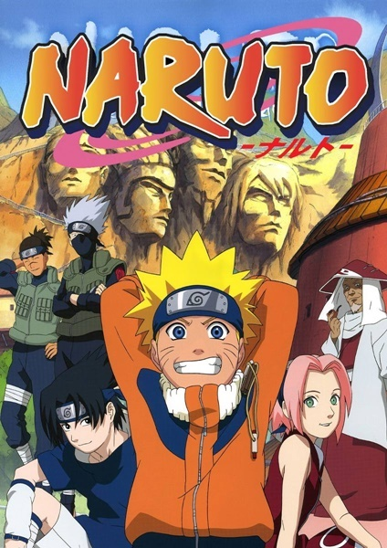
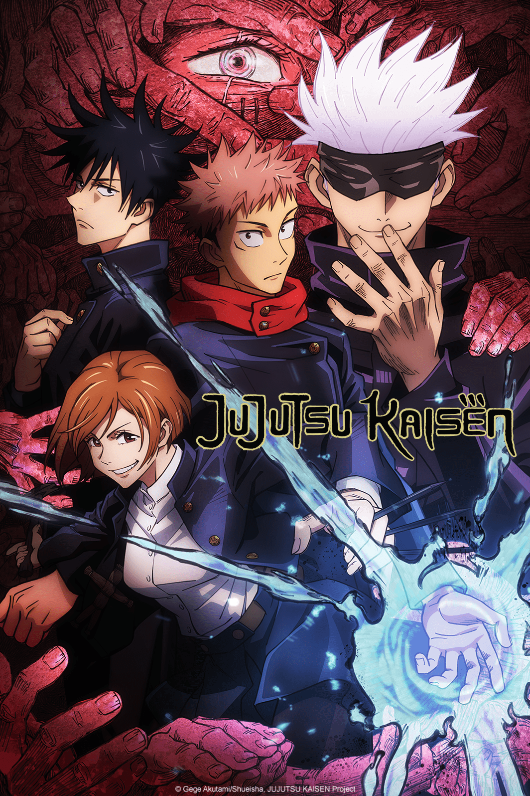

Dragon ball super
Sinopse:
Depois de finalmente destruir Majin Boo, Goku retornou para a sua vida normal e a Terra pode
novamente experimentar a paz. Mas a missão dele está longe de ter acabado: agora o Kakaroto precisará defender o
planeta de destrutivas e altamente perigosas, inclusive de universos paralelos.
Naruto Classico

Sinopse:
A série gira em torno das aventuras vividas por Naruto Uzumaki, um jovem órfão habitante da Aldeia da Folha
que sonha em se tornar o quinto Hokage, o maior guerreiro e governante da vila. Ao se graduar como ninja, Naruto
descobre que tem um demônio raposa selado dentro de si.
One Piece
Sinopse:
Monkey D. Luffy, é um jovem feito de borracha, que, inspirado em seu ídolo de infância, o poderoso pirata Shanks, o Ruivo, parte em uma jornada do mar do East Blue para encontrar o tesouro mítico, o One Piece, e proclamar-se o Rei dos Piratas
Jujutsu Kaisen

Sinopse:
Sofrimento, arrependimento, vergonha: os sentimentos negativos dos humanos tornam-se Maldições que assolam o nosso dia a dia. Maldições avassalam o mundo todo, levando as pessoas a sofrer terríveis acidentes, levando até mesmo à morte. E pra piorar, Maldições só podem ser exorcizadas por outras Maldições. Itadori Yuji é um garoto com tremenda força física que leva uma vida colegial absolutamente normal. Certo dia, para salvar amigos que estavam sendo atacados por Maldições, ele engole o dedo do Ryomen-Sukuna, absorvendo sua Maldição.